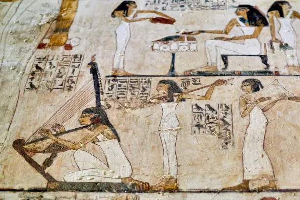

Egyptian Music (الموسيقى المصرية)
Egyptian music is full of rhythm, feeling, and tradition. It mixes old instruments like the oud and tabla with modern styles. Famous Egyptian singers like Umm Kulthum, Abdel Halim Hafez, and Amr Diab are loved by many people. Music is an important part of Egyptian life — you can hear it at weddings, in the streets, and at family gatherings. It brings people together and tells beautiful stories about love, life, and Egypt.
Egyptian Artists

| Artist | Song | Year |
|---|---|---|
| Um Kulthum | El Atlal | 1966 |
| Abd Elhalim Hafez | Ahwak | 1953 |